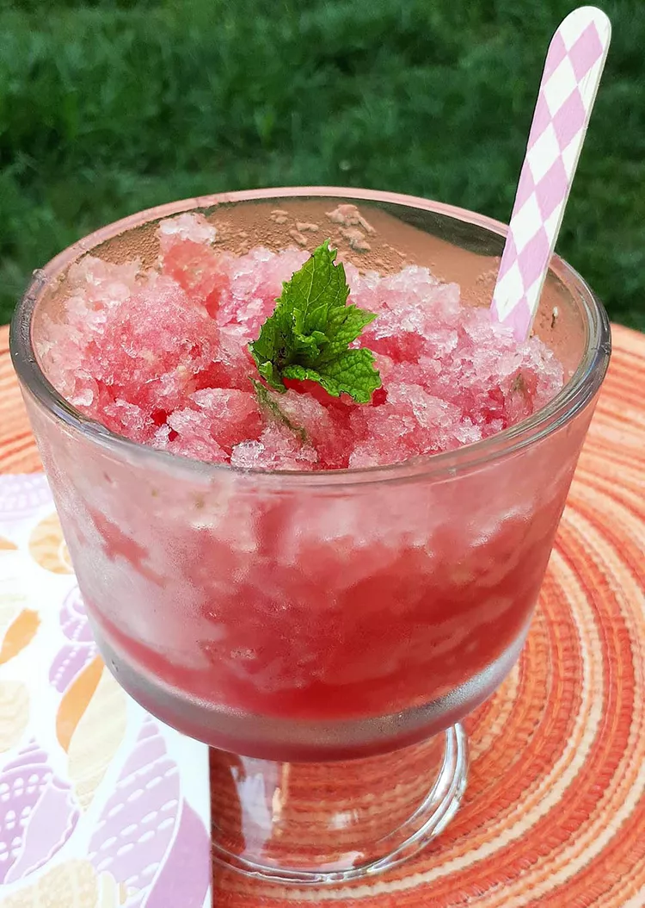

Mojito

Watermelon Mojito Granita
Ingredients
- 1 small seedless watermelon
- 1 cup water
½ cup white sugar
- 3 leaves fresh mint
- ⅓ cup white rum
Directions
- Remove rind from watermelon; dice into large cubes. Add watermelon, water, sugar, and mint leaves to an electric blender. Blend until pureed.
- Pour in rum and give it a couple of stirs to incorporate. Pour mixture into a 9x12-inch pan and place in the freezer for 4 hours. Scrape the mixture with a fork every 1 to 2 hours. It will not freeze completely due to the rum.
- Serve in a shallow bowl or a nice glass.
Back to Home